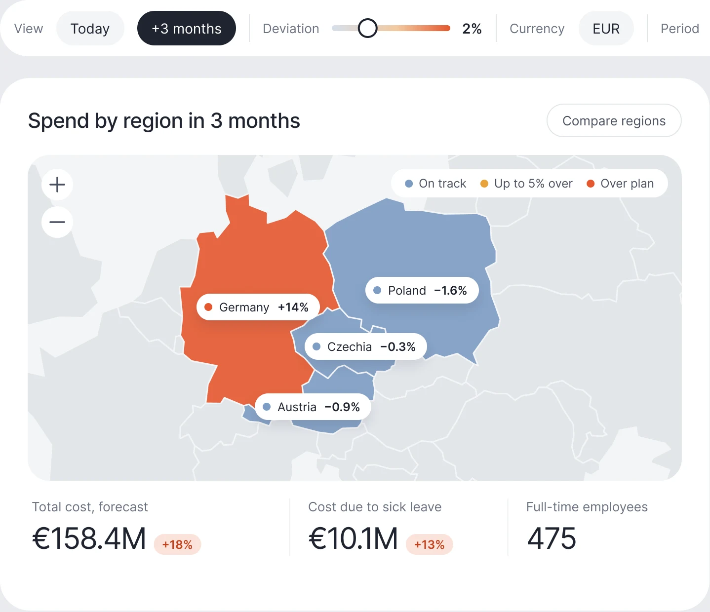
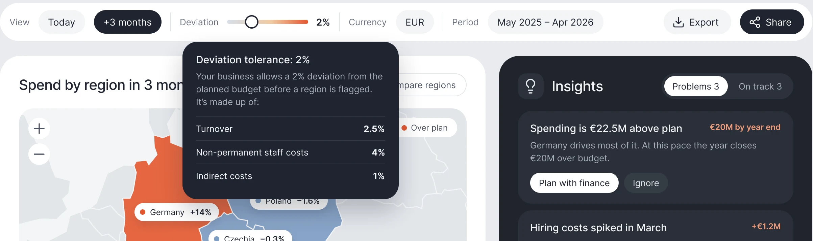
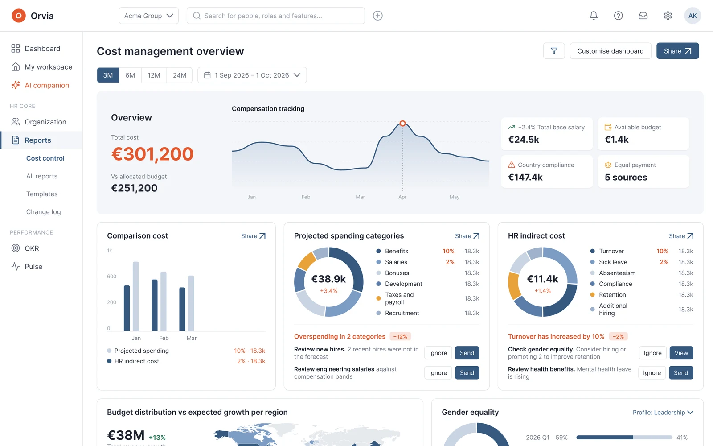

A fast-growing European HR platform held hundreds of thousands of salary data points but wasn’t using them to stand out. We defined, tested and launched a cost-control dashboard that turns pay data into decisions for leadership.
Product
People-cost dashboard
Users
HR, managers, C-suite
Scope
Workshops, prototype, testing
Delivered
Live proof of concept
12w
from first workshop to a live proof of concept
10
users and senior leaders validated it before build
1
lighthouse product chosen as the base of the roadmap
The key question
Which product would set the platform apart, and would leaders trust it with salary decisions?
What we decided
Ten users and leaders. Three hypotheses, one dropped.
01
One “+3 months” switch instead of several forecast horizons.
We assumed
Several horizons would help leaders plan further ahead.
We saw
They wanted one answer: where will we be next quarter if nothing changes? The switch recolours the map, so a region turning red is the forecast.
Hypothesis rejected

02
Every insight names its cause and one next step.
We saw
Leaders acted once they understood why a number moved, and wanted problems kept apart from good news.
Trade-off
Fewer insights on screen, each written to be acted on.
03
One bar sets forecast, tolerance and period for every view.
We saw
With filters inside each chart, people lost track of what they were looking at. They expected the period and tolerance to apply everywhere.
Trade-off
Less flexibility per chart, so the tolerance explains what it is made of.

BeforeEvery metric on one screen

AfterOne switch, insights to act on
From first workshop to a live proof of concept. In 12 weeks.
Delivered by Sensum’s founders while at a global engineering consultancy. Screens are redesigned and anonymised, and the figures in them are illustrative.